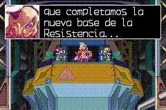

(22/09/2007) Primera traducción (v1.0)
¡Al fin pude sacar este parche! =D Una de las traducciones que más disfruté de hacer (por si a alguien se le ocurría decir que la traducción de juegos va perdiendo emoción con el tiempo =).
En parte me gustó hacerla porque es una saga que realmente me gusta mucho, y me decidí a traducirlo ya que existían parches para toda la saga excepto para este.
Lo que más tiempo tomó fue la traducción misma de textos y el insertado y recalculado de punteros, que igualmente me tomó menos tiempo que con MMZ3 ya que reutilicé las utilidades que me programé para aquel proyecto.
Ahora sí recomendaría que quien no probó esta saga de videojuegos los pruebe (ya están las cuatro partes traducidas, ahora no tiene excusa =P ).
¡Disfruten! =D
